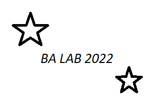

Business analysis information management
Introduction
In the delivery process, business analysts produce loads of artifacts. To manage business analysis information efficiently every BA on the project should follow the agreement on how to organize, store and manage information.
Storing agreement
Business analysis diagrams and API specifications should be stored in the GitLab repository.
Repository structure
There 3 main directories: - API - the directory containing the description of the program interfaces. - Epic - the directory containing a collection of functionalities that are united by a common feature or characteristic. - out – the directory containing pictures of diagrams.
It is necessary to follow the directories nesting:
/API
/<System>
<API_name>.yaml
/Epics
/Features
US.<Epic>.<auto-increment>.feature
/Diagrams
/<Type>
<Epic>_<UC>_<type>.puml
/Mockups
<Epic>_<name>.drawio
<FileName>.md
<FileName>.html
/out
/Epics
/Diagrams
<Name>.png
/Mockups
<Name>.png
README.md
File naming agreement
The following rules should be adhered to: - All files are named in English. - A compound file name is used. - The name should characterize the content that is inside the file.
Diagrams agreement
The following rules should be adhered to: - UML diagrams and the tool PlantUML (http://plantuml.com) are used - Diagrams are not UML notations and the tool [Drawio] (http://draw.io/) - The file name consists of epic name + "_" + script name + diagram type + "." + file type. (Example: Payment_makepurchase_sequence.puml) - The main and alternative scenarios are described in one file
Table — Diagram types |Type|Name|Comment| |---|---|---| |activity|Activity diagram|UML::Activity| |class|Class diagram or Entity relationship diagram|UML::Class| |sequence|Sequence diagram|UML::Sequence| |state|State-machine diagram|UML::State| |usecase|Use Case diagram|UML::Use Case| |dataflow|Data-flow diagram|DFD in drawio| |conceptdiagram|Conceptual model|CMD in drawio| |swimline|Swim lane diagram|Swimline in drawio|
API agreement
The following rules should be adhered to: - API files with descriptions of requests and responses must be in the format '.json', '.yaml', '.xsd', ".xml". - It is necessary to store API files in Swagger notation (https://swagger.io/). - File name consists of stream name + "_ '+ API name +". "+ File type. (Example: Payments_SSO.yaml)
Management agreement
For productive collaboration in the repository, you must adhere to the following rules: - The main branch of the repository contains the final version of the artifacts. - Uploading files to the main branch can only be done with the agreement of those responsible for the repository. - A separate branch should be created for each participant. - Each participant creates artifacts in his own branch. - At the end of the work, the participant asks those responsible for the repository with a request to upload artifacts to the main branch of the repository. - The main branch of the repository must be updated at least once a week.
Commit agreement
Please adhere to the following guidelines: - Make sure that every commit you make is atomic enough (one new or changed feature per commit). - Always write a clear message to your commits - Write in English. - Start with a verb (Add, Change, Delete). - Write with a capital letter.
Project environment
We use the IDE to prepare artifacts and use PlantUML (http://plantuml.com). Prepare the environment:
- Install software
- Client Git (http://git-scm.org)
- Visualization of charts GraphViz (https://www.graphviz.org/)
- IDE Visual Studio Code (https://code.visualstudio.com/), IntelliJ IDEA (https://www.jetbrains.com/idea/) or PyCharm (https: //www.jetbrains.com/pycharm /)
- Set up the software
- Install plugin PlantUML for IDE and GraphViz to draw charts
- customize the IDE for yourself if necessary
- Clone the repository